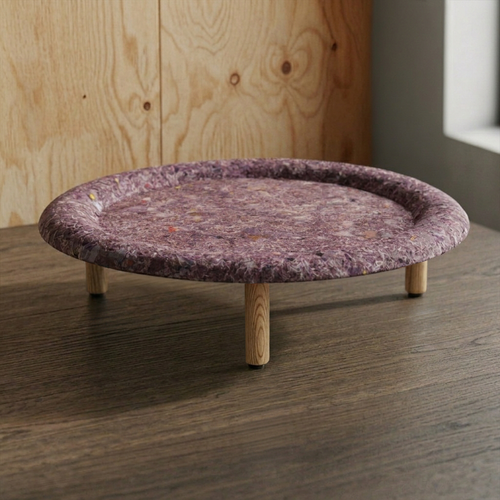
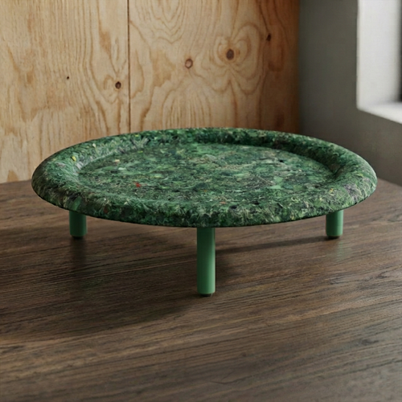
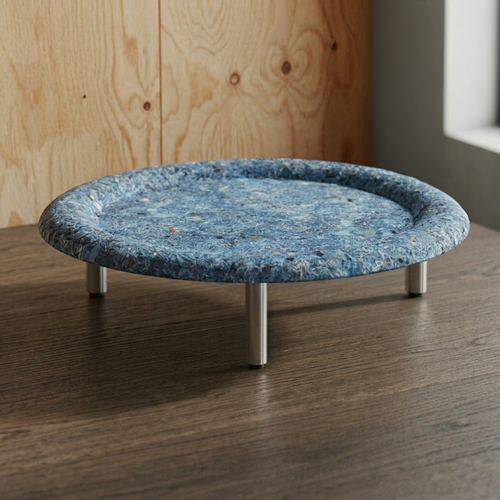
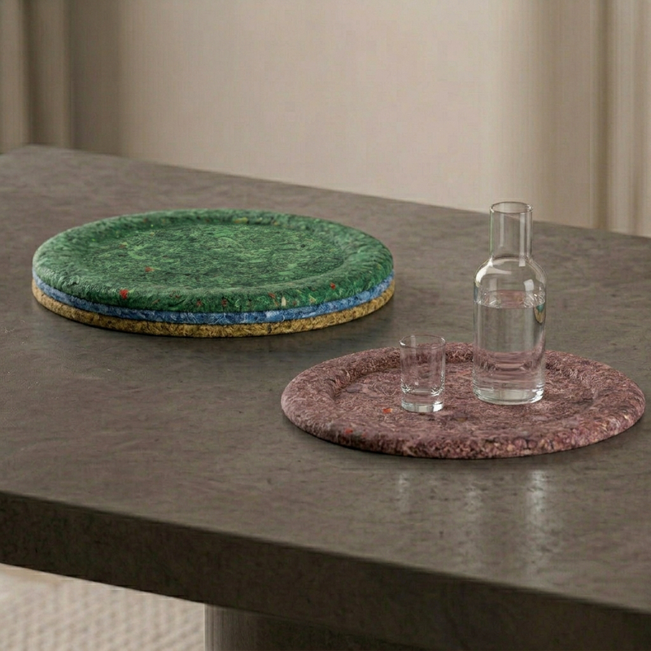
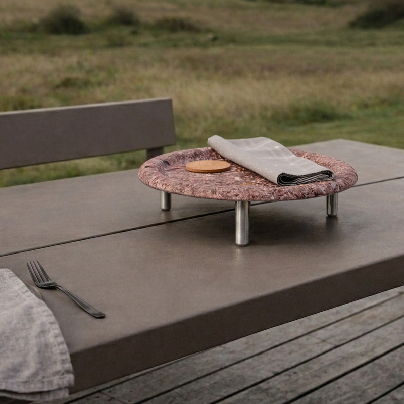

Textile Waste
Developed for the Muuto Design Contest, this project is a series of trays and stands designed around the transition between indoor and outdoor living. The trays move between context, serving as a surface for preparation inside, a vessel for carrying food and objects outdoors, and a shared platter once placed in its final setting. Used independently or elevated on a stand, the system adapts to different environments and occasions, encouraging a more fluid relationship between interior and exterior space.
The trays are made from recycled textile scraps, giving discarded materials a second life in a durable, functional object. The textile waste is processed and formed into trays, creating a tactile and varied surface that reflects its recycled origin. By transforming waste into an everyday object intended for repeated use, the project explores how material circularity can become an integral part of both the object’s function and character.




